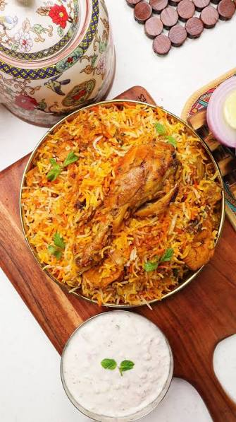

Signature Dish
Hyderabadi Biryani
The crown jewel of Hyderabadi cuisine. Fragrant basmati rice layered with slow-marinated meat, whole spices, caramelised onions and saffron-infused milk — cooked in the legendary dum (sealed-pot) method for several hours. Available as Kacchi (raw meat) or Pakki (pre-cooked meat) style.
📍 Best At: Paradise, Bawarchi, Shah Ghouse, Shadab